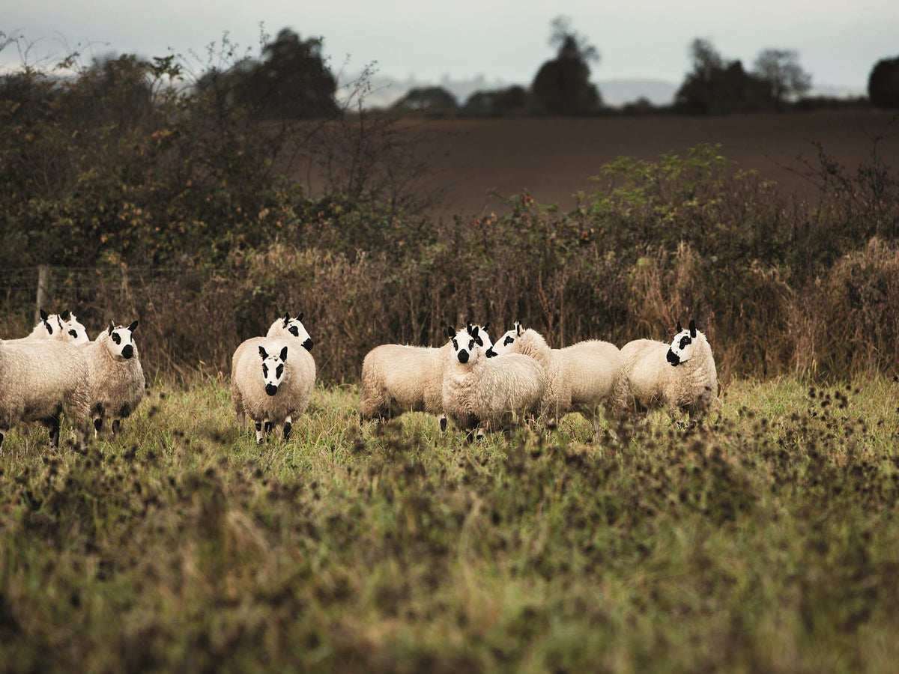

Our story

Deep within the northern Australian lush pastures, the longtime tradition of the
sheep grazing is embedded in the local culture. The sheep that we use graze on the most nutritious
wild grass. Our ethical standards of slaughter, and humane standards of treatment of the animals that we
use, have been held by our restaraunt for generations, lies in every dish, and is
experienced by all who come to the Sheep's head.
back to
Homepage